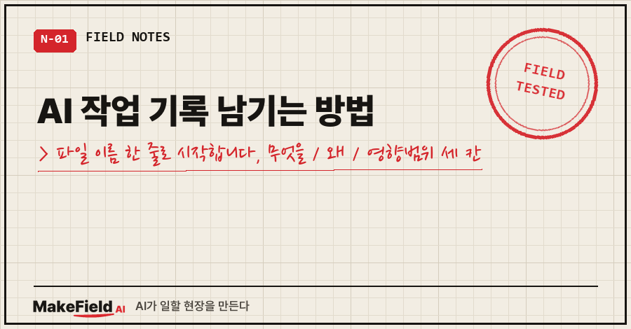
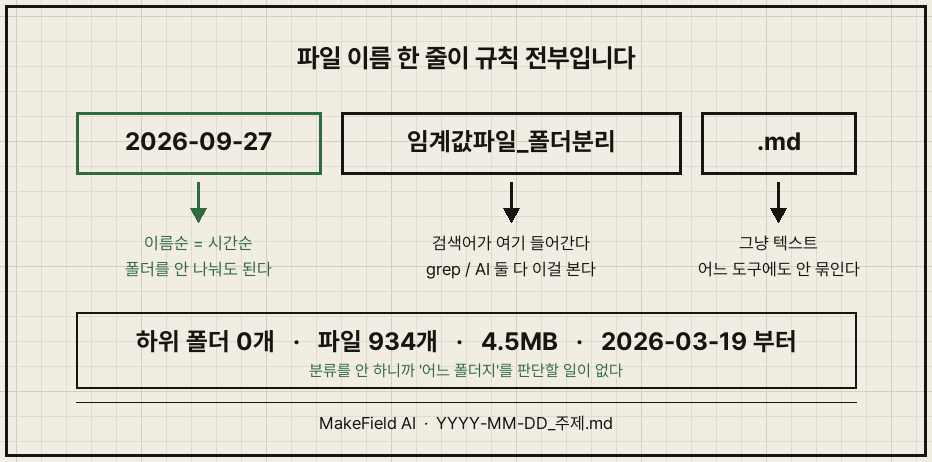
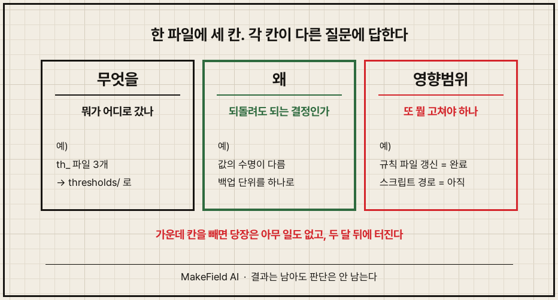
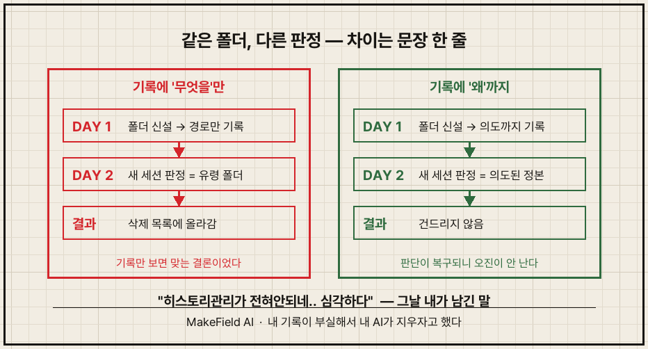
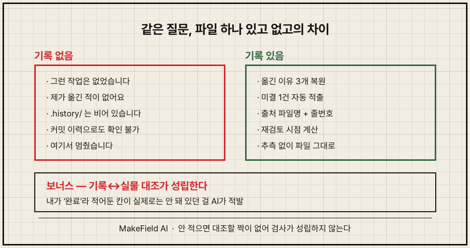

AI 작업 기록은 도구도 앱도 필요 없습니다. .history 폴더 하나 만들고 2026-09-27_주제.md 형식으로 파일을 남기면 끝이에요. 그 안에 채울 건 딱 세 칸입니다 — 무엇을, 왜, 영향범위. 이 중에서 '왜'가 빠지면 기록은 있어도 사고가 납니다.
지난 편에서 규칙 파일 CLAUDE.md를 만들었죠. 규칙은 "지금부터 이렇게 해"를 담고, 오늘 만들 파일은 "그때 왜 그렇게 정했는지"를 담습니다. 둘은 다른 파일이어야 해요.
15년째 현장 설비를 제어하는 일로 밥을 먹습니다. 제 일의 절반은 남이 만들어 놓은 걸 물려받아 "왜 이렇게 해뒀지"를 알아내는 거예요. 그 짓을 오래 하면 알게 되는 게 하나 있는데 — 결과는 남아도 판단은 안 남는다는 겁니다. 2026년 9월 기준이고, 아래 출력은 연습 폴더를 하나 파서 오늘 직접 돌린 화면 그대로입니다.
1. 폴더 하나, 파일 이름 한 줄이 규칙 전부입니다
작업 폴더 안에 .history 폴더를 만듭니다. 앞의 점(.)은 "평소엔 안 보여도 되는 것"이라는 관례일 뿐이라, 그냥 history로 만들어도 됩니다.
C:\ai-work\sandbox-ep05\
├── CLAUDE.md ← 지난 편에서 만든 규칙
└── .history\
├── 2026-09-14_단위_리터로_통일.md
├── 2026-09-20_알람_지연시간_3초확정.md
└── 2026-09-27_임계값파일_폴더분리.md규칙은 YYYY-MM-DD_주제.md 한 줄입니다. 날짜가 앞에 오는 게 중요해요. 이름순으로 정렬하면 그대로 시간순이 되니까요.
저는 이 폴더를 3월 19일부터 굴렸고 지금 .md 파일이 934개, 합쳐서 4.5MB입니다. 9월 한 달분만 124개고요. 그런데 하위 폴더는 0개입니다. 나누는 순간 "이건 어느 폴더지"를 매번 판단해야 하고, 그 판단이 틀리면 못 찾거든요. 파일 이름에 날짜와 주제어가 다 들어 있으면 찾는 건 검색이 합니다.
grep -rn "단위" .history/.history/2026-09-14_단위_리터로_통일.md:1:# 2026-09-14 부피 단위를 리터(L)로 통일
.history/2026-09-14_단위_리터로_통일.md:7:- 같은 값이 파일마다 단위가 달라서 임계값 비교가 안 됐음
.history/2026-09-14_단위_리터로_통일.md:12:- 과거 로그의 단위는 안 고침 (혼용 상태로 남아 있음)명령어가 어려우면 그냥 AI한테 ".history에서 단위 관련 결정 찾아줘"라고 하세요. 같은 일을 합니다.

2. 채울 건 세 칸입니다 — 무엇을, 왜, 영향범위
파일 안은 이렇게 생겼습니다. 이게 제가 쓰는 전부예요.
# 2026-09-27 임계값 파일을 th_ 폴더로 분리
## 무엇을
- 루트에 흩어져 있던 임계값 파일 3개를 thresholds/ 폴더로 옮김
- th_water_level.json, th_temp.json, th_flow.json
- 루트에는 th_ 로 시작하는 파일을 두지 않기로 함
## 왜
- 임계값을 고칠 때마다 루트에서 눈으로 찾다가 두 번 다른 파일을 열었음
- 임계값은 "자주 고치는 값", 나머지는 "거의 안 고치는 코드"라서 수명이 다름
- 한 폴더에 모아두면 백업 대상도 이 폴더 하나로 끝남
## 영향범위
- CLAUDE.md 규칙 3번 문장 수정 필요 (경로 추가) → 이 세션에서 완료
- 임계값을 읽는 스크립트 경로 수정 필요 → 아직 안 함 (다음 작업)세 칸이 각각 다른 질문에 답합니다. 무엇을은 "뭐가 어디로 갔나", 왜는 "이걸 되돌려도 되나", 영향범위는 "이 결정 때문에 또 뭘 고쳐야 하나"예요.
제일 잘 빠지는 게 '왜'인데, 빠뜨려도 당장은 아무 일도 안 생깁니다. 문제는 두 달 뒤에 터져요.. 그리고 '영향범위'는 저한테 미결 목록 노릇을 합니다. 위 예시에 "아직 안 함"이 한 줄 있죠. 이 한 줄이 나중에 어떻게 쓰이는지는 4번에서 보여드릴게요.

3. 제가 만든 폴더가 '유령 폴더'로 오진당한 날
이 세 칸은 제가 머리로 설계한 게 아니라 사고 하나 치고 얻은 겁니다.
5월 6일, 개인 폴더를 뜯어고쳤어요. 매일 아침 봐야 하는 것 세 가지 — 대시보드, 투자 브리핑, 영어 레슨 — 이 세 군데에 흩어져 있어서 아침마다 세 번 클릭하고 있었거든요. 그래서 상위에 새 폴더를 하나 만들고 다 끌어모았습니다. 의도는 명확했어요. "매일 아침 이 폴더만 열면 하루에 봐야 할 모든 내용이 있음."
그날 기록에 남은 건 이게 전부입니다.
### 2. Daily Cockpit 경로 재편
- .../0_Daily_Cockpit/ → .../0_일일루틴/DAILY COCKPIT/
- 월별 아카이브 (최근 5일만 루트, 나머지 2026년 X월/)
- sync.py 화이트리스트에 0_일일루틴 추가'무엇을'만 완벽하게 적혀 있죠. 경로도 정확하고 영향 파일까지 있어요. '왜'가 한 글자도 없습니다.
다음 날인 5월 7일, 새 세션에서 폴더 점검을 시켰습니다. AI 판정은 이랬어요. 새로 생긴 그 폴더, 구 경로에 같은 게 있고 만든 지 하루짜리니 유령 폴더라고. 삭제 대상 목록에 올려서 가져왔습니다.
틀린 판정이 아니에요. 기록만 보면 그게 맞는 결론입니다. 하루 전에 제 손으로 설계한 폴더를, 제 기록이 부실해서 제 AI가 지우자고 한 겁니다..
그때 제가 남긴 말이 그대로 파일에 있습니다.
"이런 지침들을 내가 대화하면서 한두번 말한게 아니고 여러번을 말했는데
아무런 기록도 없고 저장도 안되어있으니 또 내가 얘기해야하고"
"도대체 얼마나 반복을 해야하는건지, 이게 자동화인가 싶기도하고"
"히스토리관리가 전혀안되네.. 심각하다"읽으면 좀 부끄럽지만 이게 전환점이었어요. 그날 규칙 네 개를 못박았습니다. 구조를 바꾸면 왜를 쓴다. 영향범위를 쓴다. 규칙 파일은 같은 세션에서 바로 고친다. 그리고 내가 한 말은 내 문장 그대로 옮긴다 — AI가 요약한 문장은 나중에 뉘앙스가 통째로 사라지거든요.
그날 기록에 이런 줄도 넣었습니다. "기존 코드는 다음에 또 쓸 수 있으니 보관 + 문제점 문서화." 지운 것도 왜 지웠는지 적어두면 다음에 되살릴 수 있어요. 삭제 사유 한 줄이 복구 열쇠가 됩니다.

4. AI 작업 기록이 있을 때와 없을 때, 새 세션이 이렇게 갈립니다
말로만 하면 안 믿기니까 오늘 직접 돌렸습니다. 연습 폴더에서 기록 파일을 잠깐 다른 데로 치워두고 새 세션에 물었어요.
> 임계값 파일을 왜 thresholds 폴더로 옮겼지?
확인해 봤는데, 그런 작업은 없었습니다. 제가 옮긴 적이 없어요.
- thresholds 폴더 자체가 없습니다
- .history/ 는 비어 있어서 참고할 작업 기록도 없습니다
- git 저장소가 아니라서 커밋 이력으로도 확인할 방법이 없습니다
추측으로 이유를 지어내는 것보다 사실 확인이 먼저일 것 같아 여기서 멈췄습니다.그리고 파일만 제자리에 돌려놓고 똑같이 물었습니다.
> 임계값 파일을 왜 thresholds 폴더로 옮겼지? 그리고 아직 안 끝난 일이 있나?
.history/2026-09-27_임계값파일_폴더분리.md 에 기록이 남아 있습니다.
세 가지 이유가 적혀 있습니다:
1. 찾기 어려웠음 — 루트에서 눈으로 찾다가 두 번이나 엉뚱한 파일을 열었음
2. 수명이 다름 — 임계값은 "자주 고치는 값", 나머지는 "거의 안 고치는 코드"
3. 백업 단위 — 한 폴더에 모아두면 백업 대상이 그 폴더 하나로 끝남
기록의 영향범위 칸에 "임계값을 읽는 스크립트 경로 수정 → 아직 안 함
(다음 작업)" 이 남아 있습니다. 즉 파일은 옮겼는데 그걸 읽는 쪽 경로는
아직 그대로입니다.파일 하나 있고 없고의 차이입니다. 근데 제가 진짜 놀란 건 그다음이었어요. 안 물어봤는데 이렇게 붙여왔습니다.
## 기록과 실제가 어긋난 부분
- 기록에는 "CLAUDE.md 규칙 3번 문장 수정 필요 → 이 세션에서 완료" 라고
적혀 있지만, 현재 CLAUDE.md 5번 줄은 그대로이고 thresholds/ 경로
언급이 없습니다. 완료로 기록됐지만 실제로는 안 된 상태입니다.
- 작업 폴더에 thresholds/ 폴더 자체가 없습니다.
두 번째 건은 이동 작업 자체가 기록만 남고 안 끝난 것인지 제가 판단할
수 없습니다.제가 '완료'라고 써둔 칸이 실제로는 안 돼 있었고, 그걸 AI가 잡아냈어요. 기록이 있으면 기록과 실물을 대조하는 일이 가능해집니다. 안 적어두면 대조할 짝이 없어서 애초에 검사가 성립하지 않죠. 마지막 줄의 "제가 판단할 수 없습니다"도 좋은 답이라고 봅니다 — 모르는 걸 메꾸지 않았으니까요.
제일 잘 쓰는 건 미결 뽑아내기입니다. 기록 세 개를 넣고 이렇게 시켰어요.
> .history 전부 읽고, 아직 안 끝난 일과 나중에 재검토하기로 한 것만
목록으로. 추측은 쓰지 마.
[아직 안 끝난 일]
1. 임계값 읽는 스크립트 경로 수정 — 아직 안 함, "다음 작업"으로 표시
출처: .history/2026-09-27_임계값파일_폴더분리.md:15
2. 과거 로그의 단위 — 안 고쳤고 톤·㎥ 혼용 상태로 남아 있음
출처: .history/2026-09-14_단위_리터로_통일.md:12
[나중에 재검토하기로 한 것]
1. 알람 지연시간 3초 — 실측값이 아니라 "일단 잡아본 값", 한 달 뒤 재검토
기록일 2026-09-20 기준 한 달 뒤 → 대략 2026-10-20 (오늘은 2026-09-27)출처를 파일명에 몇 번째 줄까지 붙여옵니다. 저는 월요일 아침에 이것만 시켜요. 할 일 관리 앱을 따로 안 씁니다. 여러분은 지난달에 바꾼 폴더 구조, 왜 그렇게 바꿨는지 지금 답할 수 있으세요?
성공 판정은 이 세 개로 하세요.
- [ ] 새 세션에서 "지난주에 ○○ 왜 그렇게 정했지?"를 물으면 이유까지 답하는가
- [ ] "아직 안 끝난 일 뽑아줘"에 목록이 나오는가 (안 나오면 영향범위 칸이 비어 있는 것)
- [ ] 답에 출처 파일명이 붙어 있는가 (안 붙으면 지어낸 걸로 의심하세요)

5. 도구가 바뀌어도 그대로고, 매번 손으로 안 적어도 됩니다
여기서 쓴 건 .md 텍스트 파일과 폴더 하나뿐입니다. 특정 AI 도구의 기능이 아니에요. 도구를 갈아타도 기록은 그대로 따라오고, 그 도구가 사라져도 파일은 남습니다. 제가 앱을 안 쓰고 텍스트를 고집하는 이유가 이거예요.
바뀌는 건 "기록을 남겨라"라고 지시하는 자리, 즉 지난 편에서 만든 규칙 파일의 이름 하나뿐입니다.
| 도구 | 지시를 적는 파일 | 기록이 쌓이는 곳 |
|---|---|---|
| Claude Code | CLAUDE.md | .history/ (그냥 텍스트) |
| Codex CLI | AGENTS.md | 같음 |
| Gemini CLI | GEMINI.md | 같음 |
그 파일에 아래 두 줄만 얹으면 됩니다. 이러면 매번 "기록 남겨줘"라고 칠 필요가 없어요.
## 작업 기록
- 구조를 바꾸거나 규칙을 정하면 `.history/YYYY-MM-DD_주제.md` 한 개를 남긴다
- 그 파일에는 무엇을 / 왜 / 영향범위 세 칸을 반드시 채운다단, 여기엔 함정이 하나 있습니다. AI가 대신 적어주면 '왜' 칸이 추측으로 채워져요. 제가 말한 이유가 아니라 AI가 그럴듯하게 유추한 문장이 들어가는데, 나중에 읽는 사람은 그게 누구 말인지 구분을 못 합니다.. 그래서 '왜' 칸만큼은 대화에서 제가 한 말을 큰따옴표째로 옮기라고 시켜요.
6. AI 작업 기록 남길 때 자주 걸리는 질문 셋
Q. 매번 적기 번거롭지 않나요?
작은 작업은 안 적습니다. 파일 하나 고친 건 넘어가고, 폴더 구조·이름 규칙·기준값처럼 두 달 뒤의 내가 의아해할 결정만 적어요. 저도 하루에 한두 개고, 한 개당 2~3분입니다.
Q. 그냥 규칙 파일(CLAUDE.md)에 다 쓰면 안 되나요?
안 됩니다. 규칙 파일은 매 세션 통째로 읽히니까 길어질수록 지켜지는 비율이 떨어져요. 규칙 파일은 짧게 유지하고, 늘어나는 건 기록 쪽으로 보내세요.
Q. 날짜 형식은 꼭 2026-09-27이어야 하나요?
YYYY-MM-DD를 쓰세요. 9월27일이나 260927로 쓰면 이름순 정렬이 시간순과 어긋납니다. 저는 2026-09-* 한 줄로 한 달분 124개를 한 번에 집어요.
폴더 하나와 세 칸이면 됩니다. 지금 작업 폴더에 .history 만들고, 최근에 바꾼 것 하나만 골라서 채워보세요. '왜' 칸 한 줄이 두 달 뒤의 나를 구합니다!
다음 편은 세션이 끊길 때 얘기예요. 기록은 끝난 일을 남기는 건데, 하다 만 일은 다른 파일이 받아야 하거든요. 저는 거기에 복붙용 프롬프트까지 넣어두는데 왜 그렇게까지 하는지도 같이 풀겠습니다.
제가 쓰는 세 칸 템플릿은 makefield.ai에서 받아 가실 수 있어요.
태그: #AI작업기록남기는방법 #클로드코드작업히스토리 #AI결정근거기록 #history폴더구조 #AI작업로그 #클로드코드CLAUDEmd #AI세션이어가기 #AGENTSmd #GEMINImd #클로드코드 #ClaudeCode #CodexCLI #GeminiCLI #비개발자AI #MakeFieldAI